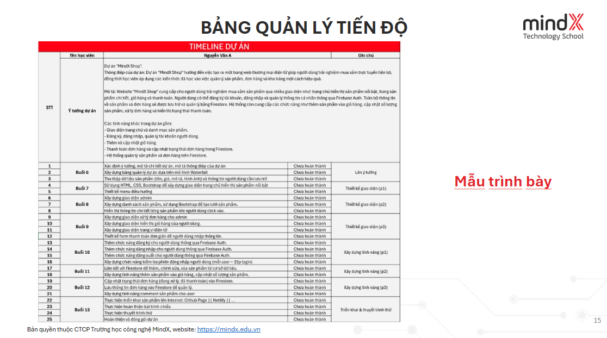

Quá trình làm sản phẩm: mô hình Water Fall
- Requirements: Yêu cầu của sản phẩm
- Analysis: phân tích các yêu cầu
- Design: thiết kế giao diện sản phẩm
- Implementation: Phát triển / triển khai sản phẩm
- Testing: Kiểm thử sản phẩm
- Maintenance: bảo trì (bỏ qua)
Xây dựng bảng quản lý tiến độ

Tìm kiếm template UI
- Bootstrap
- Template Monster
- Theme Forest
- Bootstrap made
- colorlib
- free-css
- templatemo
Màu sắc
- Ý nghĩa của các màu sắc
- Color wheel
- Các phương pháp phối màu
- Các công cụ chọn màu phổ biến:
colorhunt, adobe color, subtitle
AI Image generate
Yêu cầu về chức năng
- Firebase Auth: đăng nhập - đăng ký
- Firebase firestore + Cloudinary: lưu trữ dữ liệu user (quản lý đơn hàng, bài đăng,...)
- Tích hợp chatbot AI (gemini, chatGPT,...) thông qua API
Deploy
- github pages
- netlify
- vercel